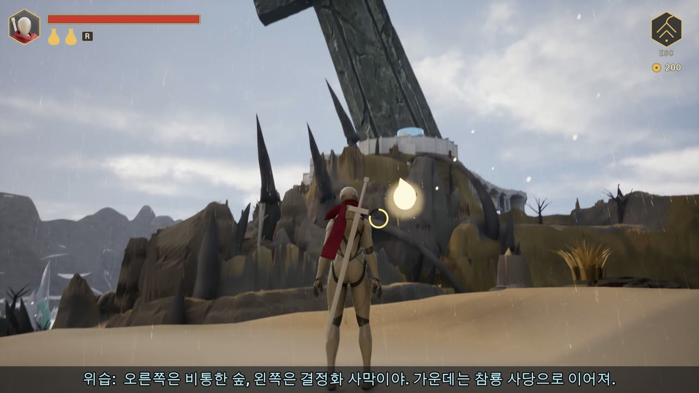
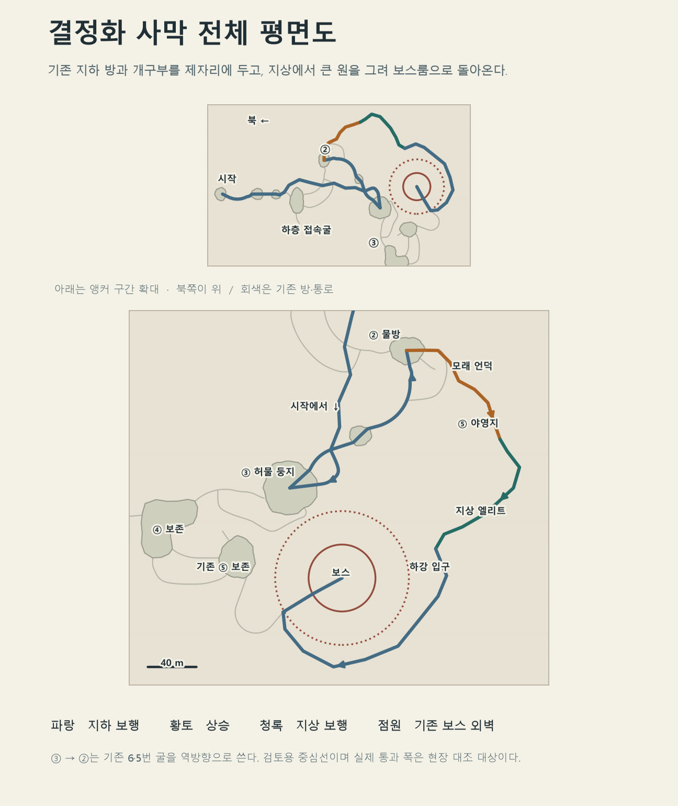
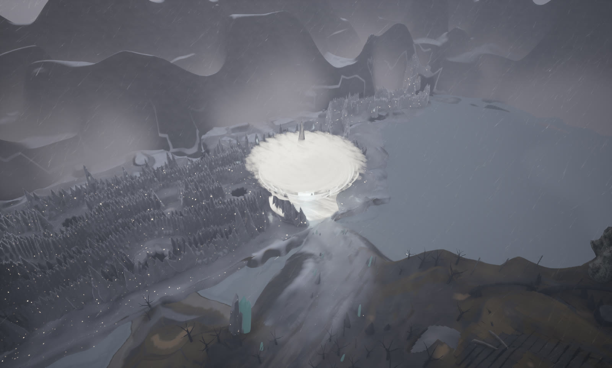
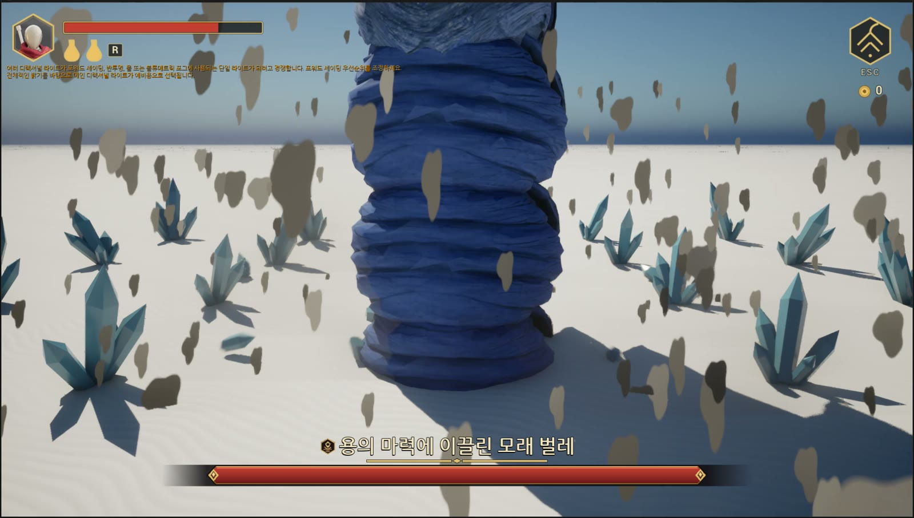
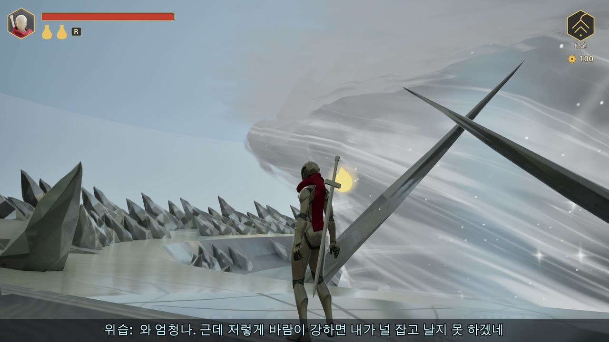

- 엔진
- Unreal Engine 5
- 기간
- 2026.10.23 ~ 개발 중 · 개인 작업
- 범위
- 인트로 · 첫 부락 · 세 갈래 · 참룡산맥 · 결정화 사막 · 비통한 숲 진입로
- 역할
- 기획·동선·배치 판정 직접 / 구현은 AI 세션 10개 이상
주요 장면 약 1분 38초
설계 의도
갈림길에서 먼저 보이는 것
좁은 협곡을 빠져나왔을 때 정면의 거대한 검이 참룡 사당으로 가는 길의 기준점이 되도록 배치했습니다. 이 자리에서 왼쪽의 결정화 사막과 오른쪽의 비통한 숲도 안내해, 플레이어가 다음 목적지를 고르게 했습니다.

같은 조작, 지역마다 다른 규칙
첫 부락에서 익힌 활공과 등반을 산맥과 사막에서도 쓰되, 지형과 날씨에 따라 다른 길을 찾도록 했습니다.
| 지역 | 활공 | 등반 |
|---|---|---|
| 첫 부락 | 인트로와 짧은 이동에 자유롭게 사용 | 망루와 계단을 오름 |
| 참룡산맥 | 검의 코등이에서는 강풍으로 제한, 엔딩 뒤 해금 예정 | 용의 등뼈와 갈비뼈를 따라 오름 |
| 결정화 사막 | 결정화 폭풍이 부는 동안 제한, 폭풍이 사라지면 해금 | 미끄러운 가시 산을 피해 미로를 걸어서 통과 |
검 위에서 성당까지, 왜 활공을 막았나
처음에는 검에서 성당까지 바로 활공하는 길을 구상했습니다. 용의 머리뼈를 먼저 보고 그 아래 성당으로 내려가는 흐름을 살리려고, 검의 코등이에서는 강풍으로 활공을 막고 머리 승강기와 식도 광산의 철길을 따라가게 했습니다.
오픈월드 전체 루트
세 갈래 길에서 세 지역이 한눈에 보이고, 지하 길은 참룡산맥의 성당으로 모입니다. 엔딩에서는 세 지역의 보물을 모아, 성당의 제단에 바칠 예정입니다. 비통한 숲은 아직 개발 중으로 이번에는 진입로만 표기했습니다.
| 인트로 | 구름 위에서 깨어나 위습을 따라 낙하하고, 위습을 잡고 활공해 해변 캠프에 내립니다. 약 40초 안에 이동과 활공 조작을 하나씩 익힙니다. |
| 첫 부락 | 몹 무리 셋 → 스위치 셋 → 봉인 철문 순서로 지나갑니다. 전투와 탐험의 기본 흐름을 짧게 반복합니다. |
| 세 갈래 | 철문을 나서면 왼쪽은 결정화 사막, 가운데는 참룡 사당, 오른쪽은 비통한 숲으로 이어집니다. 세 방향 중 어디로 갈지 고를 수 있고, 숲의 늪 입구를 통과하려면 ‘용의 피’가 필요합니다. |
| 참룡산맥 (가운데) | 참룡 사당 입구 → 꼬리 승강기 → 거대한 검의 코등이(강풍으로 활공 불가) → 머리 승강기 → 식도 광산 → 지하 성당 순으로 이어집니다. 지하 성당에서 ‘용의 피’를 얻습니다. 서쪽 문은 결정화 사막 지하로, 동쪽 길은 비통한 숲의 깊은 늪으로 이어집니다. |
| 결정화 사막 (왼쪽) | 지하 성당의 서쪽 문으로 들어가거나, 세 갈래 길에서 사막 쪽으로 내려가 구멍을 통과하면 사막 지하에 닿습니다. 지하를 지나 동굴을 따라 지상으로 올라오면 결정화 폭풍을 마주합니다. 폭풍을 피해 다시 지하로 내려가면 깊은 지하 입구 너머에서 ‘용의 마력에 이끌린 모래 벌레’와 싸웁니다. 보스를 쓰러뜨리면 보상 방에서 비를 그치게 하는 ‘불의 원석’을 얻습니다. |
| 비통한 숲 (오른쪽) | 아직 개발 중입니다. 세 갈래 오른쪽 길은 늪 입구로, 지하 성당 동쪽 길은 깊은 늪으로 이어집니다. 늪 입구를 지나려면 참룡산맥에서 얻는 ‘용의 피’가 필요합니다. |
| 엔딩 (예정) | 보물 셋을 가지고 성당에 들어서면 공명이 일어나 나선 계단이 열립니다. 성당의 제단에 보물을 바치면 용의 입 너머 안개가 걷히고 참룡성채가 모습을 드러냅니다. |


보스 패턴 · 용의 마력에 이끌린 모래 벌레
개발 중 화면
2026년 11월 빌드와 시험장 화면입니다. 계속 바뀌는 중입니다.


AI 스튜디오로 만드는 방식
게임의 방향과 판정은 제가 하고, 구현은 역할을 나눈 AI 세션들이 맡습니다.
| 지휘 | 헤드 세션 하나가 시스템·레벨·캐릭터·VFX·QA 세션에 일을 나누고, 저는 디렉터로서 기획 의도와 합격 기준을 정합니다. |
| 직접 | 동선·배치·연출 판정과 빌드를 직접 플레이하는 QA를 맡습니다. 12번째 빌드까지 제작했습니다. |
| AI로 직접 만든 도구 | 배경 식생을 PCG로 자동 배치하는 플러그인, 빌드를 켜서 오류·경고를 한 번에 세는 검사 도구, 동선에서 15초 넘게 비는 구간을 찾는 페이싱 검사, 촬영 스튜디오 등. |
| 검수 | 여러 AI 모델로 결과를 교차 검증했고, 저도 작업 중 수시로 에디터에서 직접 플레이하며 확인했습니다. |
| 규모 | 시작한 지 약 한 달, 커밋 1만 2천여 개 |